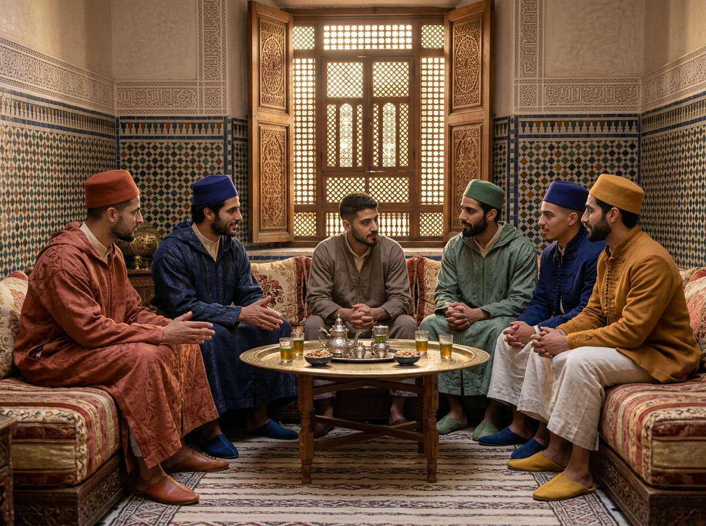
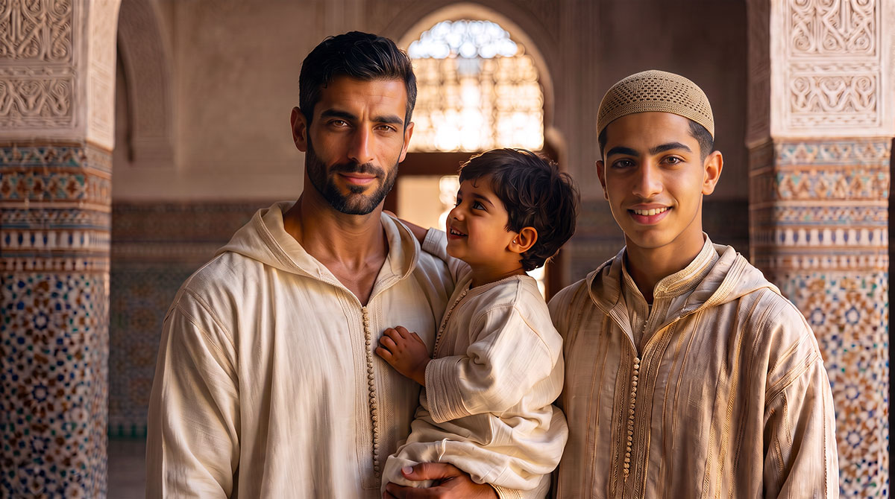
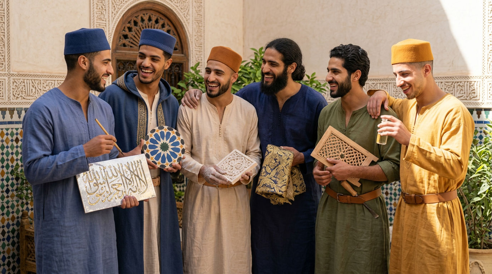
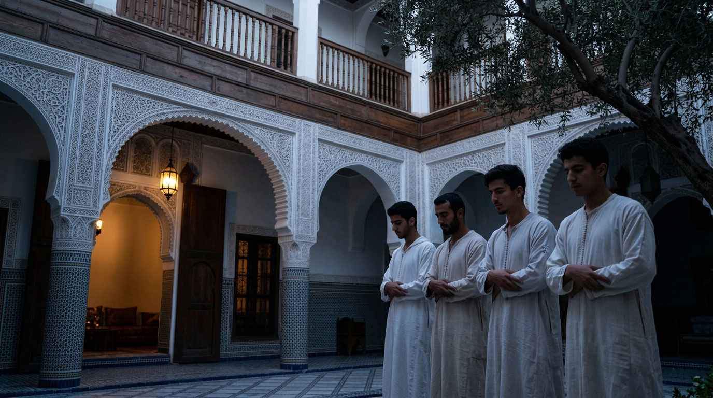
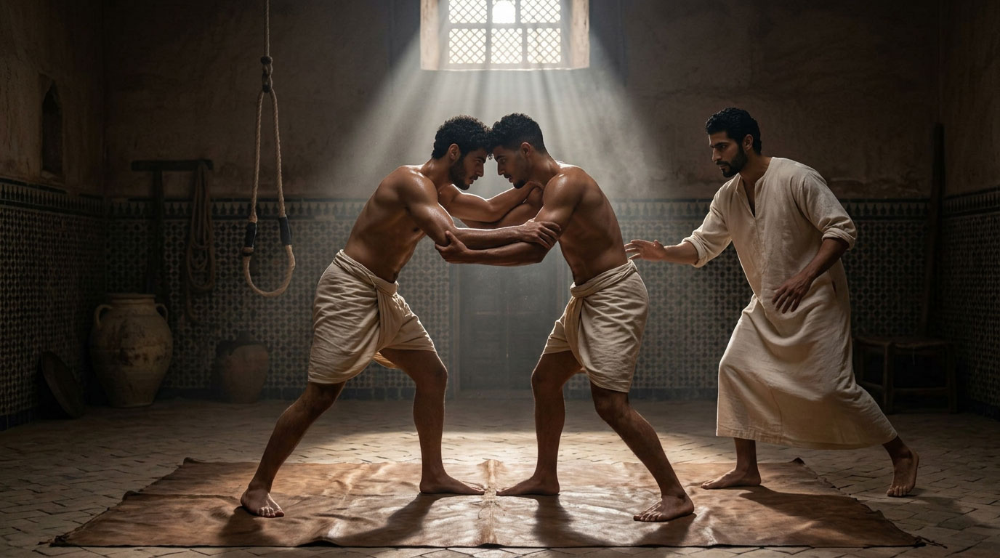

Who we are looking for

We are looking for young men who have matured a conscious decision: to no longer accept a world that no longer transmits anything solid — neither a craft held over time, nor a discipline of the body, nor a given word that commits.
We are not looking for mere passing residents. We are looking for those who are ready to become an active and responsible part of a traditional intentional community, founded on futuwwa, the transmission of a craft, prayer that structures the day, and brotherhood built through shared trial.
THE CONTEXT
Why now
Traditional crafts — calligraphy, zellige, weaving, perfumes, Andalusian music — risk disappearing along with those who still carry them. At the same time, many young men today grow up without ever having received, in a coherent way, what honor, loyalty and discipline concretely require — swallowed up by a pace that leaves no room for the patience of the gesture, nor the measure of the spoken word.
Riad Al-Uns responds to this not with nostalgia, but with residency: a craft is not saved by describing it, it is saved by forming someone capable of carrying it forward.
→ Discover Vision & missionDEEP MOTIVATIONS
What guides this choice

Formation of character
You want to grow alongside present men, under the guidance of masters who pass on a craft as much as a way of being — rather than being shaped by screens and anonymous institutions.

Stability and discipline
You seek a clear and predictable rhythm — prayer, work, the body, the table — where one can build oneself without the constant anxiety of the unexpected.

Brotherhood
You want to build real bonds, tested through shared gesture — the workshop, the table, prayer — rather than living relationships that remain on the surface.

Transmission of futuwwa
You know that generosity, loyalty and self-mastery are lived day by day, not declared in words.
IDEAL PROFILES
Three profiles, one path

HIGH PRIORITY
Craft-oriented
They believe in the value of manual work, concrete skill and intergenerational transmission. Some already know what they want to learn; others are still searching. They look far ahead, knowing that crafts almost extinct today will soon be sought after.

HIGH PRIORITY
Oriented toward spiritual and moral formation
For them, the spiritual dimension is not optional. They seek a setting where prayer, study and the discipline of character are lived naturally, carried by a community that holds them together rather than leaving them to individual will alone.

Oriented toward physical discipline
They want futuwwa to be lived in the body too — Musara, archery, horsemanship, zūrkhāne — not as performance, but as a school of measure and self-mastery.
THE PATH
The path of entry
The path of entry into Riad Al-Uns is progressive and reciprocal. It is not a simple registration, but a process of mutual acquaintance, meant to verify the alignment and the real readiness to commit to communal life.
Application
Preliminary exchange
Formation workshop
Mutual observation
Entry into residency
LET'S GET TO KNOW EACH OTHER
Take the first step
If you recognize yourself in one of these profiles, write to us. Tell us your age, the craft or discipline that interests you, and what brings you to Riad Al-Uns.